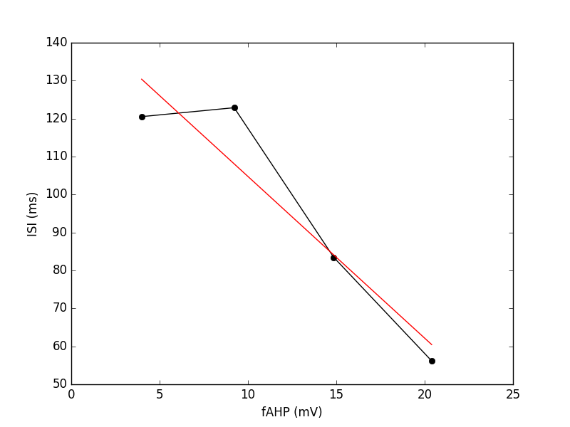

Title: A computational model for how the fast afterhyperpolarization paradoxically increases gain in regularly firing neurons
Jaffe, D.B. and Brenner R*.Department of Biology, UTSA Neurosciences Institute, University of Texas at San Antonio, One UTSA Circle, San Antonio, TX 78249, USA. *Department of Cell and Integrative Physiology, University of Texas Health Science Center at San Antonio, 7703 Floyd Curl Drive, San Antonio, TX 78229, USA.
J. Neurophysiology
The afterhyperpolarization (AHP) is canonically viewed as a major factor underlying the refractory period, serving to limit neuronal firing rate. We recently reported (Wang et al, J. Neurophys. 116:456, 2016) that enhancing the amplitude of the fast AHP in a relatively slowly firing neuron (versus fast spiking neurons), augments neuronal excitability in dentate gyrus granule neurons expressing gain-of-function BK channels. Here we present a novel, quantitative hypothesis for how varying the amplitude of the fast AHP (fAHP) can, paradoxically, influence a subsequent spike tens of milliseconds later.
Reproduces Figure2C1 using Neuron (https://neuron.yale.edu/neuron/)
Compile all files in the mods folder to generate special executable. In unix/linux type a command like:
nrnivmodl modsIf you need extra help in this above step for your platform, please consult this web page: https://senselab.med.yale.edu/ModelDB/NEURON_DwnldGuide.cshtml
nrngui Fig2.hoc
Takes just a few minutes to run and generates output files 1 through 4. You may need to exit Neuron to have the last output file have its contents flushed to disk.python PlotFig2.py
You should see graphs of voltage trajectories and this one similar to Fig 2C1 in the paper: 